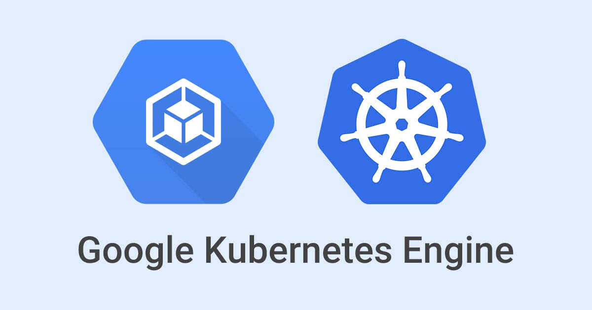
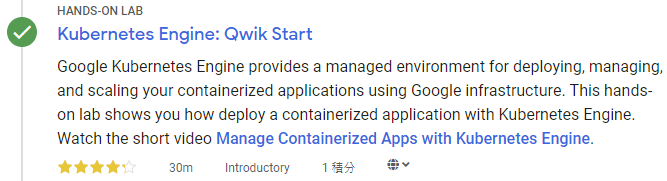
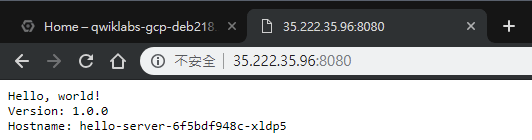

<!DOCTYPE html><html><head><meta charset="utf-8"><title>Google Kubernetes Engine (GKE) 入門 | Titangene Blog</title><meta http-equiv="X-UA-Compatible" content="IE=edge"><meta name="viewport" content="width=device-width,initial-scale=1,maximum-scale=1"><meta name="HandheldFriendly" content="True"><meta name="apple-mobile-web-app-capable" content="yes"><meta name="author" content="Titangene"><link rel="shortcut icon" href="/favicon.ico"><link rel="alternate" href="/atom.xml" title="Titangene Blog"><meta name="description" content="本篇是紀錄在 Google 的 Qwiklab 平台內，完成「Kubernetes Engine: Qwik Start」這個 quest 所學到的內容，包括如何透過 GKE 建立容器和部署容器化應用程式。"><meta property="og:type" content="article"><meta property="og:title" content="Google Kubernetes Engine (GKE) 入門"><meta property="og:url" content="https://titangene.github.io/article/getting-started-with-google-k8s-engine.html"><meta property="og:site_name" content="Titangene Blog"><meta property="og:description" content="本篇是紀錄在 Google 的 Qwiklab 平台內，完成「Kubernetes Engine: Qwik Start」這個 quest 所學到的內容，包括如何透過 GKE 建立容器和部署容器化應用程式。"><meta property="og:locale" content="zh_TW"><meta property="og:image" content="https://titangene.github.io/images/cover/gke.jpg"><meta property="article:published_time" content="2019-04-19T09:30:24.000Z"><meta property="article:modified_time" content="2019-04-30T16:00:09.450Z"><meta property="article:author" content="Titangene"><meta property="article:tag" content="Container"><meta property="article:tag" content="GCP"><meta property="article:tag" content="Load Balancer"><meta property="article:tag" content="Kubernetes"><meta name="twitter:card" content="summary_large_image"><meta name="twitter:image" content="https://titangene.github.io/images/cover/gke.jpg"><meta name="twitter:creator" content="@titangeneTW"><meta name="twitter:site" content="@titangene_blog"><meta property="fb:admins" content="100001106016019"><meta property="fb:app_id" content="2470546159839111"><meta property="og:image:width" content="1200"><meta property="og:image:height" content="630"><meta name="google-site-verification" content="AaJ39L7h-nWwJjXJMhAMtXSF6H6BUgGWXC80kYvLic8"><link rel="stylesheet" href="//fonts.googleapis.com/css?family=Inconsolata|Titillium+Web"><link href="https://fonts.googleapis.com/css?family=Source+Code+Pro&display=swap" rel="stylesheet"><link rel="stylesheet" href="//use.fontawesome.com/releases/v5.7.0/css/all.css" integrity="sha384-lZN37f5QGtY3VHgisS14W3ExzMWZxybE1SJSEsQp9S+oqd12jhcu+A56Ebc1zFSJ" crossorigin="anonymous"><link rel="stylesheet" href="/style.css"><script async src="https://www.googletagmanager.com/gtag/js?id=UA-129758206-1"></script><script>!function(a){function n(){dataLayer.push(arguments)}a.dataLayer=a.dataLayer||[],n("js",new Date),n("config","UA-129758206-1")}(window)</script><script>function setLoadingBarProgress(e){document.getElementById("loading-bar").style.width=e+"%"}</script><meta name="generator" content="Hexo 4.2.0"><link rel="alternate" href="/atom.xml" title="Titangene Blog" type="application/atom+xml"></head></html><body><div id="loading-bar-wrapper"><div id="loading-bar"></div></div><script>setLoadingBarProgress(20)</script><header class="l_header"><div class="wrapper"><div class="nav-main container container--flex"><a class="logo flat-box" href="/">Titangene Blog</a><div class="menu"><ul class="h-list"><li><a class="flat-box nav-home" href="/">Home</a></li><li><a class="flat-box nav-archives" href="/archives">Archives</a></li></ul><div class="underline"></div></div><div class="m_search"><form name="searchform" class="form u-search-form"><input type="text" class="input u-search-input" placeholder="Search"> <i class="fas fa-search"></i></form></div><ul class="switcher h-list"><li class="s-search"><a class="fas fa-search" href="javascript:void(0)"></a></li><li class="s-menu"><a class="fas fa-bars" href="javascript:void(0)"></a></li></ul></div><div class="nav-sub container container--flex"><a class="logo flat-box" href="/">Titangene Blog</a><ul class="switcher h-list"><li class="s-comment"><a class="far fa-comment-alt" href="javascript:void(0)"></a></li><li class="s-top"><a class="fas fa-arrow-up" href="javascript:void(0)"></a></li><li class="s-toc"><a class="fas fa-list-ol" href="javascript:void(0)"></a></li></ul></div></div></header><aside class="menu-phone"><nav><a href="/" class="nav-home nav">Home </a><a href="/archives" class="nav-archives nav">Archives</a></nav></aside><script>setLoadingBarProgress(40)</script><div class="l_body"><div class="container clearfix"><div class="l_main"><article id="post-getting-started-with-google-k8s-engine" class="post white-box article-type-post" itemscope itemprop="blogPost"><section class="meta"><h2 class="title"><a href="/article/getting-started-with-google-k8s-engine.html">Google Kubernetes Engine (GKE) 入門</a></h2><span class="post-time"><span class="post-meta-item-icon"><i class="fa fa-calendar"></i> </span><span class="post-meta-item-text">發表於</span> <time title="建立時間：2019-04-19 17:30:24" itemprop="dateCreated datePublished" datetime="2019-04-19T17:30:24+08:00">2019-04-19 </time><span class="post-meta-divider">|</span> <span class="post-meta-item-icon"><i class="fa fa-calendar-check"></i> </span><span class="post-meta-item-text">更新於</span> <time title="修改時間：2019-05-01 00:00:09" itemprop="dateModified" datetime="2019-05-01T00:00:09+08:00">2019-05-01</time></span> <span class="comments-count"><span class="post-meta-divider">|</span> <span class="post-meta-item-icon"><i class="fas fa-comment"></i> </span><a href="https://titangene.github.io/article/getting-started-with-google-k8s-engine.html#disqus_thread" class="article-comment-count" data-disqus-identifier="article/getting-started-with-google-k8s-engine.html" itemprop="discussionUrl"></a></span><div class="post-category"><span class="post-meta-item-icon"><i class="fa fa-folder"></i> </span><span class="post-meta-item-text">分類於</span> <span itemprop="about" itemscope itemtype="http://schema.org/Thing"><a href="/categories/cloud/" itemprop="url" rel="index"><span itemprop="name">Cloud</span></a></span></div></section><section class="toc-wrapper"><h3>目錄</h3><ol class="toc"><li class="toc-item toc-level-2"><a class="toc-link" href="#GKE-的叢集編排管理-orchestration"><span class="toc-text">GKE 的叢集編排管理 (orchestration)</span></a></li><li class="toc-item toc-level-2"><a class="toc-link" href="#GCP-上的-Kubernetes"><span class="toc-text">GCP 上的 Kubernetes</span></a></li><li class="toc-item toc-level-2"><a class="toc-link" href="#準備"><span class="toc-text">準備</span></a></li><li class="toc-item toc-level-2"><a class="toc-link" href="#開始你的-Lab，然後登入-GCP-Console"><span class="toc-text">開始你的 Lab，然後登入 GCP Console</span></a></li><li class="toc-item toc-level-2"><a class="toc-link" href="#啟動-Google-Cloud-Shell"><span class="toc-text">啟動 Google Cloud Shell</span></a></li><li class="toc-item toc-level-2"><a class="toc-link" href="#設定預設的-compute-zone"><span class="toc-text">設定預設的 compute zone</span></a></li><li class="toc-item toc-level-2"><a class="toc-link" href="#建立-GKE-叢集"><span class="toc-text">建立 GKE 叢集</span></a></li><li class="toc-item toc-level-2"><a class="toc-link" href="#取得叢集的驗證憑證"><span class="toc-text">取得叢集的驗證憑證</span></a></li><li class="toc-item toc-level-2"><a class="toc-link" href="#將應用部署至叢集"><span class="toc-text">將應用部署至叢集</span></a></li><li class="toc-item toc-level-2"><a class="toc-link" href="#將應用公開發佈到網際網路"><span class="toc-text">將應用公開發佈到網際網路</span></a></li><li class="toc-item toc-level-2"><a class="toc-link" href="#清除"><span class="toc-text">清除</span></a></li><li class="toc-item toc-level-2"><a class="toc-link" href="#參考來源"><span class="toc-text">參考來源</span></a></li></ol></section><section class="article typo"><div class="article-entry" itemprop="articleBody"><p></p><p>本篇是紀錄在 Google 的 Qwiklab 平台內，完成「<a href="https://www.qwiklabs.com/focuses/878?parent=catalog" target="_blank" rel="noopener">Kubernetes Engine: Qwik Start</a>」這個 quest 所學到的內容，包括如何透過 GKE 建立容器和部署容器化應用程式。</p><a id="more"></a><p></p><p><a href="https://cloud.google.com/kubernetes-engine/" target="_blank" rel="noopener">Google Kubernetes Engine</a> (GKE) 提供了一個代管環境，可以使用 Google 基礎架構來部署、管理和擴展容器化應用程式。GKE 提供的環境是由多台機器 (特別是 <a href="https://cloud.google.com/compute" target="_blank" rel="noopener">Google Compute Engine</a> instance) 組成，組成一個<a href="https://cloud.google.com/kubernetes-engine/docs/concepts/cluster-architecture" target="_blank" rel="noopener">容器叢集</a>。在此 lab 中，你將透過 GKE 來實際練習如何建立容器和部署應用程式。</p><h2 id="GKE-的叢集編排管理-orchestration"><a class="header-anchor" href="#GKE-的叢集編排管理-orchestration"></a>GKE 的叢集編排管理 (orchestration)</h2><p>GKE 叢集是由 <a href="https://kubernetes.io/" target="_blank" rel="noopener">Kubernetes</a> 開源叢集管理系統提供技術支援。你可以透過 Kubernetes 提供的機制與容器叢集互動。可以使用 Kubernetes 指令和資源來部署以及管理應用程式、執行管理任務、制訂政策，以及監控已部署工作負載 (workload) 的健康狀態。</p><p>Kubernetes 採用相同的設計原則來執行常用的 Google 服務，並提供相同的優勢：應用程序容器的自動管理、監控與有效性探測 (liveness probe)、自動擴展，滾動升級…等。當您在容器叢集上執行應用程序時，你所使用的技術是由 Google 在容器中執行 production 工作負載的十餘年經驗的技術。</p><h2 id="GCP-上的-Kubernetes"><a class="header-anchor" href="#GCP-上的-Kubernetes"></a>GCP 上的 Kubernetes</h2><p>執行 GKE 叢集時，你也可以獲得 GCP 所提供的進階叢集管理功能優點，其中包括：</p><ul><li>Google Compute Engine (GCE) instances 提供的<a href="https://cloud.google.com/compute/docs/load-balancing-and-autoscaling" target="_blank" rel="noopener">負載平衡</a></li><li><a href="https://cloud.google.com/kubernetes-engine/docs/concepts/node-pools" target="_blank" rel="noopener">節點池 (Node Pools)</a> 可以指定叢集中的子集節點，以獲得額外的靈活性</li><li><a href="https://cloud.google.com/kubernetes-engine/docs/cluster-autoscaler" target="_blank" rel="noopener">自動擴展 (Automatic scaling)</a> 叢集的節點 instance 數量</li><li><a href="https://cloud.google.com/kubernetes-engine/docs/concepts/node-auto-upgrades" target="_blank" rel="noopener">自動升級</a>叢集的節點軟體</li><li><a href="https://cloud.google.com/kubernetes-engine/docs/concepts/node-auto-repair" target="_blank" rel="noopener">自動修復節點</a>：可維護節點的健康狀態和可用性</li><li>使用 Stackdriver 來<a href="https://cloud.google.com/kubernetes-engine/docs/how-to/logging" target="_blank" rel="noopener">記錄 (logging)</a> 和<a href="https://cloud.google.com/kubernetes-engine/docs/how-to/monitoring" target="_blank" rel="noopener">監控</a>，用於查看叢集的狀態</li></ul><h2 id="準備"><a class="header-anchor" href="#準備"></a>準備</h2><p>在點擊「Start Lab」之前，準備好網路瀏覽器 (推薦用 Google Chrome)，並且至少 40 分鐘可以專注的時間，因為 lab 是有時間限制，當你按下「Start Lab」開始學習時，無法暫停倒數計時，你只能在這段時間內使用 lab 提供給你的全新暫時 GCP Console 可用帳號，時間到之後的幾分鐘就會自動登出。</p><div class="warning"><p>注意：如果你有自己的個人 GCP 帳號或專案，請不要在此 lab 使用</p></div><h2 id="開始你的-Lab，然後登入-GCP-Console"><a class="header-anchor" href="#開始你的-Lab，然後登入-GCP-Console"></a>開始你的 Lab，然後登入 GCP Console</h2><ol><li>如果準備要開始，可以點擊右上角的「Start Lab」開始：</li></ol><p></p><ol start="2"><li>接著會出現這個畫面，因為我參加 <a href="https://www.facebook.com/events/2005848903055499/" target="_blank" rel="noopener">GDG Tainan</a> 的活動，活動有提供 Qwiklabs 一個月的免費額度，所以我點選下圖左邊的「Use Subscription」：</li></ol><p></p><ol start="3"><li>Lab 會提供給你免費暫時的 GCP 帳號，複製帳號和密碼，然後點擊「Open Google Console」開啟 <a href="https://cloud.google.com/storage/docs/cloud-console" target="_blank" rel="noopener">GCP Console</a>：</li></ol><p></p><p>圖片來源：<a href="https://www.qwiklabs.com/focuses/3563?parent=catalog" target="_blank" rel="noopener">Creating a Virtual Machine | Qwiklabs</a></p><ol start="4"><li>接著就會開啟登入頁面，建議另外開 Chrome 無痕模式來登入 lab 提供的帳號和密碼，因為 Chrome 會紀錄帳密，現在登入的只是暫時帳號，未來不需要用到：</li></ol><div class="warning"><p>注意：這邊是登入 lab 提供的帳號 (也就是 email 必須為 <code>googlexxxxxx_student@qwiklabs.net</code> )，如果你有自己的 GCP 帳號，請不要用於此 lab，避免產生費用</p><blockquote><p>類似於 <code>googlexxxxxx_student@qwiklabs.net</code> 的帳號是一個 Google 帳號，專為 Qwiklabs 學生使用而建立的。它具有特定的域名 (也就是 <code>qwiklabs.net</code> )，並且已分配了 IAM 角色，允許你去存取該 GCP 專案。</p></blockquote></div><p></p><ol start="5"><li>接受 terms 和 conditions：</li></ol><p></p><ol start="6"><li>不要新增 recovery options 或 two-factor authentication (因為這是一個臨時帳號)：</li></ol><p></p><ol start="7"><li>勾選同意服務條款：</li></ol><p></p><p>之後就可以開始使用 GCP Console 囉：</p><p></p><h2 id="啟動-Google-Cloud-Shell"><a class="header-anchor" href="#啟動-Google-Cloud-Shell"></a>啟動 Google Cloud Shell</h2><p>Google Cloud Shell 是載入了開發工具的 VM，它提供 5GB 的 home 目錄，並在 Google Cloud 上執行。可用 Google Cloud Shell 提供的 command-line 來存取 GCP 的資源。</p><ol><li>在 GCP console 的右上方工具列中，點擊「Activate Cloud Shell」按鈕：</li></ol><p></p><ol start="2"><li>在打開的對話框內，點擊「START CLOUD SHELL」：</li></ol><p></p><ol start="3"><li>連接和提供環境需要一些時間：</li></ol><p></p><ol start="4"><li>連接後，就代表你已經過身份驗證，專案已設置為 <code>PROJECT_ID</code>，以下圖的為例，此專案的 ID 為 <code>qwiklabs-gcp-f9d61ede8167e6b0</code>：</li></ol><p></p><p><code>gcloud</code> 是 GCP 的 command-line 工具，他已預先安裝在 Cloud Shell 上，並且支援 tab 自動補齊 (tab-completion)。</p><p>使用下面指令可列出有效帳號名稱：</p><figure class="highlight shell"><table><tr><td class="gutter"><pre><span class="line">1</span><br><span class="line">2</span><br><span class="line">3</span><br><span class="line">4</span><br><span class="line">5</span><br><span class="line">6</span><br><span class="line">7</span><br></pre></td><td class="code"><pre><code class="hljs shell"><span class="hljs-meta">$</span><span class="bash"> gcloud auth list</span><br>          Credentialed Accounts<br>ACTIVE  ACCOUNT<br>*       google3043863_student@qwiklabs.net<br><br>To set the active account, run:<br>    $ gcloud config set account `ACCOUNT`<br></code></pre></td></tr></table></figure><p>可以使用以下指令列出專案 ID：</p><figure class="highlight shell"><table><tr><td class="gutter"><pre><span class="line">1</span><br><span class="line">2</span><br><span class="line">3</span><br><span class="line">4</span><br><span class="line">5</span><br></pre></td><td class="code"><pre><code class="hljs shell"><span class="hljs-meta">$</span><span class="bash"> gcloud config list project</span><br>[core]<br>project = qwiklabs-gcp-f9d61ede8167e6b0<br><br>Your active configuration is: [cloudshell-9292]<br></code></pre></td></tr></table></figure><blockquote><p>詳情可參考官方的 <a href="https://cloud.google.com/sdk/gcloud/" target="_blank" rel="noopener">Google Cloud gcloud Overview</a> 文件。</p></blockquote><h2 id="設定預設的-compute-zone"><a class="header-anchor" href="#設定預設的-compute-zone"></a>設定預設的 compute zone</h2><p><a href="https://cloud.google.com/compute/docs/regions-zones/#available" target="_blank" rel="noopener">compute zone</a> 是你的叢集及其資源所在的大概區域位置，例如：<code>us-central1-a</code> 是 <code>us-central1</code> region 中的一個 zone。</p><p>在 Cloud Shell 中啟用新的 session 並執行以下指令，將預設 compute zone 設為 <code>us-central1-a</code>：</p><figure class="highlight shell"><table><tr><td class="gutter"><pre><span class="line">1</span><br><span class="line">2</span><br></pre></td><td class="code"><pre><code class="hljs shell"><span class="hljs-meta">$</span><span class="bash"> gcloud config <span class="hljs-built_in">set</span> compute/zone us-central1<span class="hljs-_">-a</span></span><br>Updated property [compute/zone].<br></code></pre></td></tr></table></figure><blockquote><p>詳情可參考官方的 <a href="https://cloud.google.com/kubernetes-engine/docs/how-to/managing-clusters#before_you_begin" target="_blank" rel="noopener">Managing clusters</a> 文件。</p></blockquote><h2 id="建立-GKE-叢集"><a class="header-anchor" href="#建立-GKE-叢集"></a>建立 GKE 叢集</h2><p>一個<a href="https://cloud.google.com/kubernetes-engine/docs/concepts/cluster-architecture" target="_blank" rel="noopener">叢集</a>包含至少一個叢集主要 (master) 機器和多個稱為 node 的工作 (worker) 機器組成。node 是 <a href="https://cloud.google.com/compute/docs/instances/" target="_blank" rel="noopener">Google Compute Engine (GCE) 的 VM instance</a>，執行 Kubernetes 的必要程序 (process)，使它們成為叢集的一部分。</p><p>若要建立叢集，請執行以下指令，並將 <code>[CLUSTER-NAME]</code> 替換為自訂的叢集名稱 (例如：<code>my-cluster</code> )。叢集名稱必須以字母開頭，結尾必須是字母或數字，且不能超過 40 個字元。</p><figure class="highlight shell"><table><tr><td class="gutter"><pre><span class="line">1</span><br></pre></td><td class="code"><pre><code class="hljs shell"><span class="hljs-meta">$</span><span class="bash"> gcloud container clusters create [CLUSTER-NAME]</span><br></code></pre></td></tr></table></figure><p>你可以無視下面這些輸出內的任何警告：</p><figure class="highlight shell"><table><tr><td class="gutter"><pre><span class="line">1</span><br><span class="line">2</span><br><span class="line">3</span><br><span class="line">4</span><br><span class="line">5</span><br><span class="line">6</span><br><span class="line">7</span><br></pre></td><td class="code"><pre><code class="hljs shell">WARNING: In June 2019, node auto-upgrade will be enabled by default for newly created clusters and node pools. To disable it, use the `--no-enable-autoupgrade`flag.<br>WARNING: Starting in 1.12, new clusters will have basic authentication disabled by default. Basic authentication can be enabled (or disabled) manually using the `--[no-]enable-basic-auth` flag.<br>WARNING: Starting in 1.12, new clusters will not have a client certificate issued. You can manually enable (or disable) the issuance of the client certificate using the `--[no-]issue-client-certificate` flag.<br>WARNING: Currently VPC-native is not the default mode during cluster creation. In the future, this will become the default mode and can be disabled using `--no-enable-ip-alias` flag. Use `--[no-]enable-ip-alias` flag to suppress this warning.<br>WARNING: Starting in 1.12, default node pools in new clusters will have their legacy Compute Engine instance metadata endpoints disabled by default. To create a cluster with legacy instance metadata endpoints disabled in the default node pool, run `clusters create` with the flag `--metadata disable-legacy-endpoints=true`.<br>This will enable the autorepair feature for nodes. Please see https://cloud.google.com/kubernetes-engine/docs/node-auto-repair for more information on node autorepairs.<br>WARNING: Starting in Kubernetes v1.10, new clusters will no longer get compute-rw and storage-ro scopes added to what is specified in --scopes (though the latter will remain included in the default --scopes). To use these scopes, add them explicitly to --scopes. To use the new behavior, set container/new_scopes_behavior property (gcloud config set container/new_scopes_behavior true).<br></code></pre></td></tr></table></figure><p>建立叢集可能需要一些時間，很快應該會看到類似下面的輸出：</p><figure class="highlight shell"><table><tr><td class="gutter"><pre><span class="line">1</span><br><span class="line">2</span><br></pre></td><td class="code"><pre><code class="hljs shell">NAME        LOCATION       MASTER_VERSION  MASTER_IP      MACHINE_TYPE   NODE_VERSION   NUM_NODES  STATUS<br>my-cluster  us-central1-a  1.11.7-gke.12   104.154.18.48  n1-standard-1  1.11.7-gke.12  3          RUNNING<br></code></pre></td></tr></table></figure><blockquote><p>詳情可參考官方的 <a href="https://cloud.google.com/kubernetes-engine/docs/how-to/creating-a-cluster" target="_blank" rel="noopener">Creating a cluster</a> 文件。</p></blockquote><h2 id="取得叢集的驗證憑證"><a class="header-anchor" href="#取得叢集的驗證憑證"></a>取得叢集的驗證憑證</h2><p>建立叢集後，需要取得驗證憑證 (authentication credentials) 才能操作叢集。</p><p>執行下面指定來對叢集進行驗證，將 <code>[CLUSTER-NAME]</code> 替換成叢集名成：</p><figure class="highlight shell"><table><tr><td class="gutter"><pre><span class="line">1</span><br></pre></td><td class="code"><pre><code class="hljs shell"><span class="hljs-meta">$</span><span class="bash"> gcloud container clusters get-credentials [CLUSTER-NAME]</span><br></code></pre></td></tr></table></figure><p>輸出如下：</p><figure class="highlight shell"><table><tr><td class="gutter"><pre><span class="line">1</span><br><span class="line">2</span><br></pre></td><td class="code"><pre><code class="hljs shell">Fetching cluster endpoint and auth data.<br>kubeconfig entry generated for my-cluster.<br></code></pre></td></tr></table></figure><blockquote><p>詳情可參考官方的 <a href="https://cloud.google.com/kubernetes-engine/docs/how-to/cluster-access-for-kubectl" target="_blank" rel="noopener">Cluster access for kubectl</a> 文件。</p></blockquote><h2 id="將應用部署至叢集"><a class="header-anchor" href="#將應用部署至叢集"></a>將應用部署至叢集</h2><p>現在你已經建立了一個叢集，可以將<a href="https://cloud.google.com/kubernetes-engine/docs/concepts/kubernetes-engine-overview" target="_blank" rel="noopener">容器化應用程式</a>部署到該叢集。在此 lab 中，你將在叢集中執行 <code>hello-app</code>。</p><p>GKE 使用 Kubernetes 物件來建立和管理叢集的資源。Kubernetes 提供 <a href="https://kubernetes.io/docs/concepts/workloads/controllers/deployment/" target="_blank" rel="noopener">Deployment</a> 物件來部署 stateless 的應用，例如：web server。<a href="https://kubernetes.io/docs/concepts/services-networking/service/" target="_blank" rel="noopener">Service</a> 物件定義了從網際網路上存取應用程式的規則和負載平衡。</p><p>在 Cloud Shell 中執行下面的 <a href="https://kubernetes.io/docs/reference/generated/kubectl/kubectl-commands#run" target="_blank" rel="noopener"><code>kubectl run</code></a> 指令，從 <code>hello-app</code> 容器 image 建立新的名為 <code>hello-server</code> 的 <a href="https://kubernetes.io/docs/concepts/workloads/controllers/deployment/" target="_blank" rel="noopener">Deployment</a>：</p><figure class="highlight shell"><table><tr><td class="gutter"><pre><span class="line">1</span><br><span class="line">2</span><br></pre></td><td class="code"><pre><code class="hljs shell"><span class="hljs-meta">$</span><span class="bash"> kubectl run hello-server --image=gcr.io/google-samples/hello-app:1.0 --port 8080</span><br>deployment.apps "hello-server" created<br></code></pre></td></tr></table></figure><blockquote><p>我在 Github 上面找到 <code>hello-app</code> image 的專案原始碼：<a href="https://github.com/GoogleCloudPlatform/kubernetes-engine-samples/tree/master/hello-app" target="_blank" rel="noopener">GoogleCloudPlatform/kubernetes-engine-samples</a></p></blockquote><blockquote><p>如果想在自己的專案上使用自己建置的容器 image，並將此 image 的應用部署至 GKE，可參考官方的 <a href="https://cloud.google.com/kubernetes-engine/docs/tutorials/hello-app" target="_blank" rel="noopener">Deploying a containerized web application</a> 文件。</p></blockquote><p>此 Kubernetes 指令建立一個代表 <code>hello-app</code> 的 Deployment 物件。在此指令中：</p><ul><li><code>--image</code>：指定要部署的容器 image。在這種情況下，該指令從 <a href="https://cloud.google.com/container-registry/docs" target="_blank" rel="noopener">Google Container Registry</a> bucket 中 pull 範例 image。<code>gcr.io/google-samples/hello-app:1.0</code> 代表這個指令要 pull 的特定 image 版本。如果未指定版本，會使用最新版</li><li><code>--port</code>：指定容器要公開的 port</li></ul><h2 id="將應用公開發佈到網際網路"><a class="header-anchor" href="#將應用公開發佈到網際網路"></a>將應用公開發佈到網際網路</h2><p>根據預設，在 GKE 上執行的容器無法從網際網路存取，因為這些容器沒有外部 IP 位址。所以你必須執行 <a href="https://kubernetes.io/docs/reference/generated/kubectl/kubectl-commands#expose" target="_blank" rel="noopener"><code>kubectl expose</code></a> 這個指令：</p><figure class="highlight shell"><table><tr><td class="gutter"><pre><span class="line">1</span><br><span class="line">2</span><br></pre></td><td class="code"><pre><code class="hljs shell"><span class="hljs-meta">$</span><span class="bash"> kubectl expose deployment hello-server --<span class="hljs-built_in">type</span>=<span class="hljs-string">"LoadBalancer"</span></span><br>service/hello-server exposed<br></code></pre></td></tr></table></figure><p>此指令會建立一個 Kubernetes Service，它是一個 Kubernetes 資源。GKE 會為應用程式建立外部 IP，明確地將應用程序公開給來自網際網路的流量 (外部流量)。加上 <code>type=&quot;LoadBalancer&quot;</code> 參數會為容器建立一個 GCE 的 Load Balancer (在自己的專案上使用<a href="https://cloud.google.com/compute/pricing#lb" target="_blank" rel="noopener">需要計費</a>)。</p><p>GKE 會將外部 IP 位址指派給 Service 資源，而不是指派給 Deployment。如果你想要找出 GKE 為應用程式佈建 (provisioned) 的外部 IP，可執行 <a href="https://kubernetes.io/docs/reference/generated/kubectl/kubectl-commands#get" target="_blank" rel="noopener"><code>kubectl get service</code></a> 來檢查 <code>hello-server</code> Service：</p><figure class="highlight shell"><table><tr><td class="gutter"><pre><span class="line">1</span><br></pre></td><td class="code"><pre><code class="hljs shell"><span class="hljs-meta">$</span><span class="bash"> kubectl get service hello-server</span><br></code></pre></td></tr></table></figure><div class="info"><p>產生外部 IP 位址可能需要一分鐘。如果 <code>EXTERNAL-IP</code> 欄位顯示為 <code>pending</code> 狀態時 (如下)，請等待一段時間後，再次執行上面的指令：</p><figure class="highlight shell"><table><tr><td class="gutter"><pre><span class="line">1</span><br><span class="line">2</span><br></pre></td><td class="code"><pre><code class="hljs shell">NAME           TYPE           CLUSTER-IP     EXTERNAL-IP   PORT(S)          AGE<br>hello-server   LoadBalancer   10.39.249.21   &lt;pending&gt;     8080:31693/TCP   51s<br></code></pre></td></tr></table></figure></div><p>確認應用程式的外部 IP 位址後 ( <code>EXTERNAL-IP</code> 欄位提供的 IP)，請複製此 IP 位址，以下面的輸出範例來說，要複製的 Service 外部 IP 位址就是 <code>35.222.35.96</code>：</p><figure class="highlight shell"><table><tr><td class="gutter"><pre><span class="line">1</span><br><span class="line">2</span><br></pre></td><td class="code"><pre><code class="hljs shell">NAME           TYPE           CLUSTER-IP     EXTERNAL-IP    PORT(S)          AGE<br>hello-server   LoadBalancer   10.39.249.21   35.222.35.96   8080:31693/TCP   1m<br></code></pre></td></tr></table></figure><p>接著將剛剛複製的外部 IP 位址，加上公開的 port，網址格式就會像下面這樣：</p><figure class="highlight plain"><table><tr><td class="gutter"><pre><span class="line">1</span><br></pre></td><td class="code"><pre><code class="hljs plain">http:&#x2F;&#x2F;[EXTERNAL-IP]:8080<br></code></pre></td></tr></table></figure><p>使用瀏覽器開啟此網址，查看應用程式是否能存取。</p><p>看到的頁面應該會像下圖這樣：</p><p></p><h2 id="清除"><a class="header-anchor" href="#清除"></a>清除</h2><p>執行下面的指令來刪除 Service，此步驟將取消分配為你的 Service 所建立的 Cloud Load Balancer：</p><figure class="highlight shell"><table><tr><td class="gutter"><pre><span class="line">1</span><br></pre></td><td class="code"><pre><code class="hljs shell"><span class="hljs-meta">$</span><span class="bash"> kubectl delete service hello-server</span><br></code></pre></td></tr></table></figure><p>執行下面的指令來刪除容器叢集，此步驟會一併刪除容器叢集的組成資源，例如：運算執行個體、磁碟和網路資源：</p><figure class="highlight shell"><table><tr><td class="gutter"><pre><span class="line">1</span><br><span class="line">2</span><br><span class="line">3</span><br><span class="line">4</span><br><span class="line">5</span><br></pre></td><td class="code"><pre><code class="hljs shell"><span class="hljs-meta">$</span><span class="bash"> gcloud container clusters delete [CLUSTER-NAME]</span><br>The following clusters will be deleted.<br> - [my-cluster] in [us-central1-a]<br><br>Do you want to continue (Y/n)?<br></code></pre></td></tr></table></figure><p>當出現提示時，輸入 <code>Y</code> 進行確認。刪除叢集可能需要一些時間。刪除叢集後的輸出會像下面這樣：</p><figure class="highlight shell"><table><tr><td class="gutter"><pre><span class="line">1</span><br><span class="line">2</span><br><span class="line">3</span><br><span class="line">4</span><br><span class="line">5</span><br><span class="line">6</span><br><span class="line">7</span><br></pre></td><td class="code"><pre><code class="hljs shell">The following clusters will be deleted.<br> - [my-cluster] in [us-central1-a]<br><br>Do you want to continue (Y/n)?  y<br><br>Deleting cluster my-cluster...done.<br>Deleted [https://container.googleapis.com/v1/projects/qwiklabs-gcp-deb218c6553ee39c/zones/us-central1-a/clusters/my-cluster].<br></code></pre></td></tr></table></figure><blockquote><p>詳情可查看官方的 <a href="https://cloud.google.com/kubernetes-engine/docs/how-to/deleting-a-cluster" target="_blank" rel="noopener">Deleting a cluster | Google Kubernetes Engine</a> 文件。</p></blockquote><h2 id="參考來源"><a class="header-anchor" href="#參考來源"></a>參考來源</h2><ul><li><a href="https://www.qwiklabs.com/focuses/878?parent=catalog" target="_blank" rel="noopener">Kubernetes Engine: Qwik Start | Qwiklabs</a></li></ul></div><div class="article-tags tags"><a href="/tags/container/" title="Container">Container</a> <a href="/tags/gcp/" title="GCP">GCP</a> <a href="/tags/load-balancer/" title="Load Balancer">Load Balancer</a> <a href="/tags/kubernetes/" title="Kubernetes">Kubernetes</a></div></section><div class="article-share-links"><span>分享：</span> <a class="fab fa-facebook-f" title="Facebook" target="_blank" href="javascript:window.open('https://www.facebook.com/sharer.php?u=https%3A%2F%2Ftitangene.github.io%2Farticle%2Fgetting-started-with-google-k8s-engine.html', 'Share on Facebook','width=600, height=600')"></a> <a class="fab fa-twitter" title="Twitter" target="_blank" href="javascript:window.open('https://twitter.com/share?url=https%3A%2F%2Ftitangene.github.io%2Farticle%2Fgetting-started-with-google-k8s-engine.html&amp;text=Google Kubernetes Engine (GKE) 入門&amp;hashtags=Container,GCP,LoadBalancer,Kubernetes&amp;via=titangene_blog', 'Share on Twitter','width=600, height=260')"></a> <a class="fab fa-linkedin-in" title="Linkedin" target="_blank" href="javascript:window.open('https://www.linkedin.com/shareArticle?mini=true&amp;url=https%3A%2F%2Ftitangene.github.io%2Farticle%2Fgetting-started-with-google-k8s-engine.html&amp;title=Google Kubernetes Engine (GKE) 入門', 'Share on Linkedin','width=600, height=600')"></a> <a class="fab fa-facebook-messenger" title="Facebook Messenger" target="_blank" href="javascript:window.open('http://www.facebook.com/dialog/send?app_id=2470546159839111&amp;link=https%3A%2F%2Ftitangene.github.io%2Farticle%2Fgetting-started-with-google-k8s-engine.html&amp;display=popup&amp;redirect_uri=https%3A%2F%2Fwww.facebook.com%2Fdialog%2Freturn%2Fclose%23_%3D_', 'Send in Messenger','width=600, height=600')"></a> <a class="fab fa-telegram-plane" href="https://telegram.me/share/url?url=https%3A%2F%2Ftitangene.github.io%2Farticle%2Fgetting-started-with-google-k8s-engine.html&text=Google Kubernetes Engine (GKE) 入門" target="_blank"></a></div><nav id="article-nav"><a href="/article/getting-started-with-cloud-shell-gcloud-and-gsutil.html" id="article-nav-prev" class="article-nav-link-wrap" title="Google Cloud Shell 入門：gcloud &amp; gsutil" rel="prev"><strong class="article-nav-caption">Prev</strong><p class="article-nav-title">Google Cloud Shell 入門：gcloud &amp; gsutil</p><i class="fas fa-angle-left"></i> </a><a href="/article/gcp-network-and-http-load-balancer.html" id="article-nav-next" class="article-nav-link-wrap" title="在 GCP 建立 Network Load Balancer 和 HTTP Load Balancer" rel="next"><strong class="article-nav-caption">Next</strong><p class="article-nav-title">在 GCP 建立 Network Load Balancer 和 HTTP Load Balancer</p><i class="fas fa-angle-right"></i></a></nav><section id="list_related_posts"><h2>相關文章</h2><ul class="related-posts"><li class="related-posts-item"><a class="related-posts-link" href="/article/gcp-network-and-http-load-balancer.html">在 GCP 建立 Network Load Balancer 和 HTTP Load Balancer</a><div class="related-posts-item-abstract">本篇是紀錄在 Google 的 Qwiklab 平台內，完成「Set Up Network and HTTP Load Balancers」這個 quest 所學到的內容，包括如何建立多個 web server inst</div></li><li class="related-posts-item"><a class="related-posts-link" href="/article/networking-in-docker-compose.html">透過 Docker Compose 設定 network</a><div class="related-posts-item-abstract">Docker Compose 預設會建立 default network，這篇會告訴你如何自訂 network、如何使用現有的 network，以及如何自訂 network 名稱。Docker Compose 預設會幫你</div></li><li class="related-posts-item"><a class="related-posts-link" href="/article/getting-started-with-gcp.html">GCP (Google Cloud Platform) 入門</a><div class="related-posts-item-abstract">本篇是紀錄在 Google 的 Qwiklab 平台內，完成「A Tour of Qwiklabs and the Google Cloud Platform」這個 quest 所學到的內容，包括如何使用以及認識 Qwi</div></li><li class="related-posts-item"><a class="related-posts-link" href="/article/gcp-vm-nignx-web-server.html">在 GCP 上建立 VM 架設 NIGNX Web server</a><div class="related-posts-item-abstract">本篇是紀錄在 Google 的 Qwiklab 平台內，完成「Creating a Virtual Machine」這個 quest 所學到的內容，包括如何透過 GCP Console 和 command-line 工具</div></li><li class="related-posts-item"><a class="related-posts-link" href="/article/getting-started-with-cloud-shell-gcloud-and-gsutil.html">Google Cloud Shell 入門：gcloud & gsutil</a><div class="related-posts-item-abstract">本篇是紀錄在 Google 的 Qwiklab 平台內，完成「Getting Started with Cloud Shell &amp; gcloud」這個 quest 所學到的內容，包括如何使用 gcloud 指令，</div></li><li class="related-posts-item"><a class="related-posts-link" href="/article/gcp-vm-windows-server.html">在 GCP 上建立 VM 架設 Windows Server</a><div class="related-posts-item-abstract">本篇是紀錄在 Google 的 Qwiklab 平台內，完成「Compute Engine: Qwik Start - Windows」這個 quest 所學到的內容，包括如何透過 GCP Console 在 GCP 建</div></li></ul></section><section class="comments" id="comments"><h2>討論區</h2><div id="disqus_thread"><noscript>Please enable JavaScript to view the <a href="https://disqus.com/?ref_noscript" target="_blank" rel="noopener">comments powered by Disqus.</a></noscript></div></section></article><script>window.subData={title:"Google Kubernetes Engine (GKE) 入門",tools:!0}</script></div><aside class="l_side"><section class="m_widget about"><div class="avatar-section"><style>.avatar-cover{background:url(/images/avatar_cover.jpg) 0 10%/cover no-repeat}</style><div class="avatar-cover"></div></div><div class="header">Titangene</div><div class="content"><div class="desc">利用 blog 紀錄學習歷程</div></div><div class="content"><meta itemprop="url" content="https://titangene.github.io"><div class="social-wrapper"><a itemprop="sameAs" href="https://github.com/titangene" class="social github" target="_blank" rel="external"><span class="fab fa-github-alt"></span> </a><a itemprop="sameAs" href="https://www.facebook.com/titangene.tw" class="social facebook" target="_blank" rel="external"><span class="fab fa-facebook-square"></span> </a><a itemprop="sameAs" href="https://www.instagram.com/titangene/" class="social instagram" target="_blank" rel="external"><span class="fab fa-instagram"></span> </a><a itemprop="sameAs" href="https://www.flickr.com/photos/titangene" class="social flickr" target="_blank" rel="external"><span class="fab fa-flickr"></span> </a><a itemprop="sameAs" href="/atom.xml" class="social rss" target="_blank" rel="external"><span class="fas fa-rss"></span></a></div></div></section><section class="m_widget facebook_page"><div class="fb-page" data-href="https://www.facebook.com/titangene.blog/" data-width="250" data-small-header="false" data-adapt-container-width="false" data-hide-cover="false" data-show-facepile="true"><blockquote cite="https://www.facebook.com/titangene.blog/" class="fb-xfbml-parse-ignore"><p><a href="https://www.facebook.com/titangene.blog/" class="social facebook" target="_blank"><span class="fab fa-facebook-square"></span></a></p><p><a href="https://www.facebook.com/titangene.blog/" target="_blank" rel="noopener">Titangene Blog</a></p><p>Loading...</p></blockquote></div></section><section class="m_widget recent"><div class="header">Recents</div><div class="content"><ul class="entry"><li><a itemprop="url" class="flat-box" href="/article/npm-and-yarn-cheatsheet.html"><time>2020-04-26</time><div class="name">npm / Yarn 套件管理器指令比對 cheatsheet</div></a></li><li><a itemprop="url" class="flat-box" href="/article/nvm.html"><time>2020-04-19</time><div class="name">nvm：安裝、切換不同 Node.js 版本的管理器</div></a></li><li><a itemprop="url" class="flat-box" href="/article/git-detached-head.html"><time>2020-04-12</time><div class="name">淺入 Git：detached HEAD</div></a></li><li><a itemprop="url" class="flat-box" href="/article/git-tag-object.html"><time>2020-04-05</time><div class="name">深入 Git：Git 物件儲存 - tag 物件</div></a></li><li><a itemprop="url" class="flat-box" href="/article/git-head-ref.html"><time>2020-03-29</time><div class="name">深入 Git：HEAD refs</div></a></li></ul></div></section></aside><script>setLoadingBarProgress(60)</script></div></div><footer id="footer" class="clearfix"><div class="social-wrapper"><a href="https://github.com/titangene" class="social github" target="_blank" rel="external"><span class="fab fa-github-alt"></span> </a><a href="https://www.facebook.com/titangene.tw" class="social facebook" target="_blank" rel="external"><span class="fab fa-facebook-square"></span> </a><a href="https://www.instagram.com/titangene/" class="social instagram" target="_blank" rel="external"><span class="fab fa-instagram"></span> </a><a href="https://www.flickr.com/photos/titangene" class="social flickr" target="_blank" rel="external"><span class="fab fa-flickr"></span> </a><a href="/atom.xml" class="social rss" target="_blank" rel="external"><span class="fas fa-rss"></span></a></div><div>© 2018 - 2020 <span itemprop="copyrightHolder">Titangene</span></div><div>Powered by <a href="https://hexo.io/" target="_blank" class="codename" rel="external noopener">Hexo</a> - Theme <a href="https://github.com/stkevintan/hexo-theme-material-flow" target="_blank" class="codename" rel="external noopener">MaterialFlow</a></div><div><a rel="license noopener" href="http://creativecommons.org/licenses/by-nc-sa/4.0/" target="_blank" rel="external noopener"></a></div></footer><script>setLoadingBarProgress(80)</script><script src="//cdnjs.cloudflare.com/ajax/libs/jquery/2.1.4/jquery.min.js"></script><script src="https://cdnjs.cloudflare.com/ajax/libs/clipboard.js/2.0.0/clipboard.min.js"></script><script src="/js/jquery.fitvids.js"></script><script>var SEARCH_SERVICE="hexo",ROOT="/";ROOT.endsWith("/")||(ROOT+="/")</script><script src="/js/search.js"></script><script src="/js/app.js"></script><script src="/js/clipboard-use.js"></script><script>var disqus_shortname="titangene-blog",disqus_config=function(){this.page.url="https://titangene.github.io/article/getting-started-with-google-k8s-engine.html",this.page.identifier="article/getting-started-with-google-k8s-engine.html",this.page.title="Google Kubernetes Engine (GKE) 入門"};!function(){var t=document.createElement("script");t.async=!0,t.src="//"+disqus_shortname+".disqus.com/embed.js",t.setAttribute("data-timestamp",""+new Date),(document.head||document.body).appendChild(t)}()</script><script id="dsq-count-scr" src="https://titangene-blog.disqus.com/count.js" async></script><div id="fb-root"></div><script>window.fbAsyncInit=function(){FB.init({appId:"2470546159839111",autoLogAppEvents:!0,xfbml:!0,version:"v2.11"}),FB.AppEvents.logPageView()},function(e,n,t){var o,s=e.getElementsByTagName(n)[0];e.getElementById(t)||((o=e.createElement(n)).id=t,o.src="//connect.facebook.net/zh_TW/sdk.js",s.parentNode.insertBefore(o,s))}(document,"script","facebook-jssdk")</script><script>setLoadingBarProgress(100)</script></body>